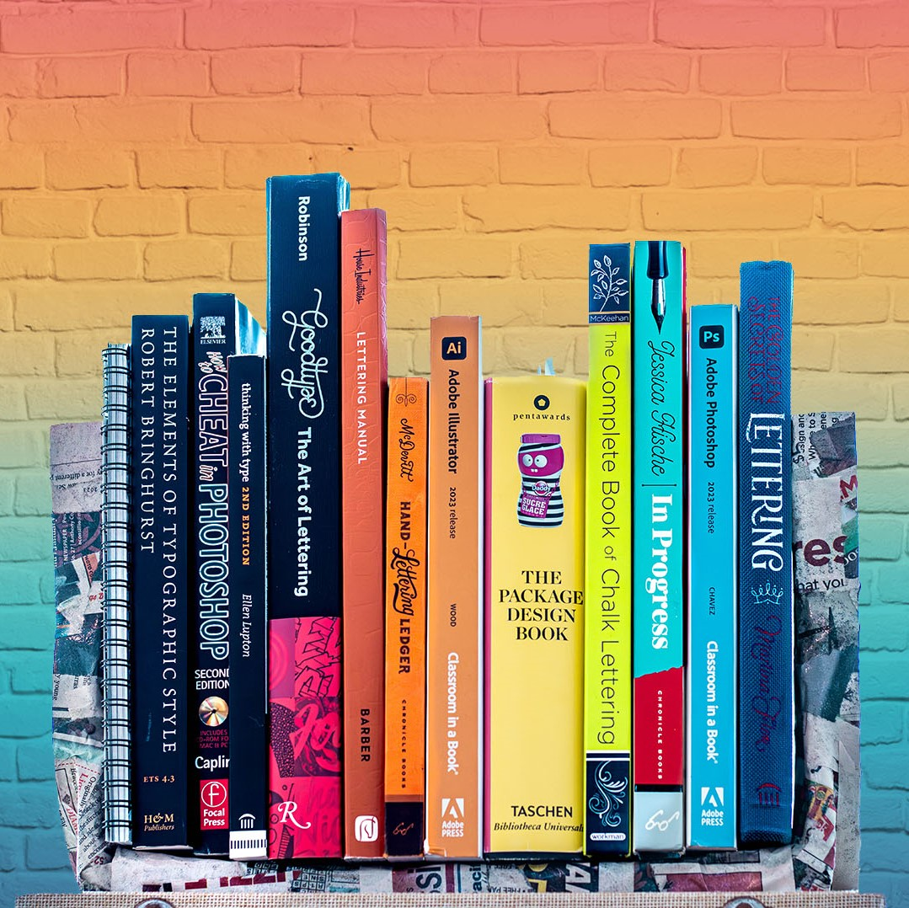

Jenny Marie Zuniga
.designs
hi, my name is jenny.
She / Her
I am a life-long student, designer, artist & all-around creative.
about.
I was born in Texas, raised in New York & aged in Hawaii. I am a cat-mom of two and on a seemingly endless journey to figure out how to live my best neurodivergent life in this neurotypical world. I am the type of person that sprains my ankle getting up from a bench, is always covered in glitter, paint, cat hair or flour and will randomly forget how stairs work. Basically, I am a bit of an odd ball but I have found that the secret to success (for me, at least) is to...
dive into the weirdness.
For example, you would think that a portfolio website should be clean and tidy, featuring a few of my best works along with written descriptions of my process that are somehow both eloquent & succinct;
i reject this.
My creative process is visceral—I could give you a written or verbal breakdown of my work—but I would prefer to take you on a convoluted journey rather than tell you a linear story. This may leave you with more questions than answers and that is intentional. I want this to be a glimpse into my brain and creative process - and surprise! It is messy, colorful and a little bit bizarre, just like me.

Contact
Jennifer (Jenny) Marie Zuniga
808 675 6468 | jmzuniga@hawaii.edu.
*Note: Part of being neurodivergent means that I have trouble with things like correspondence. This is pretty much to say that if I do not get back to you—I am not intentionally being an asshole—I just happen to be a little bit of an accidental asshole. A text is probably your best shot.
branding.
“It’s through mistakes that you actually can grow. You have to get bad in order to get good.”
Paula Scher

Calm Your Sh*t
Positioning Statement
Calm Your Sh*t is a company offering personalized subscription boxes that are designed as a bold and modern approach to coping with anxiety—captivating the user by soothing the body & mind. Their goal is to destigmatize mental illness by giving it a playful, offbeat spin.
Target Audience
This company is made for an audience that is youthful, progressive, and ready to take ownership of their mental health. They believe that "fuck" is the most versitile word in the English language and gravitate towards all things offbeat. Furthermore, they value inclusivity and the idea that everyone deserves a gold medal—just for existing.
Brand Personality

Logo
The Calm Your Sh*t Logo was designed within a square box, meant to represent the box breathing technique.
Color Pallete
![The color palette for the brand. The main two are shown as the largest, meant for print and body copy. These two are holographic foil and dark grey, number 534c54. On the bottom there is a strip labeled accent color only - customer chooses any single or combination of colors for their subscription. These colors include red number DE7763, orange number F4AE6A, yellow number F8DB72, green number B1B465, blue number A7D9D0, purple number 82546A and grey number CCCCCC. There is also an image of the faicon - the custom calm your shit asterisk inside of a square outline.](img/calm/Color.svg)
Typography
patterns, icons & Graphics

packaging

UI/UX Design
Personally, I am more of a "print" gal, but please feek free to check out my UI/UX design here: Website, Mobile App.
lettering.
“I believe that every designer has to have personal projects—it’s the only way to grow and find a unique voice.”
Louise Fili
Pro-Abortion Lettering
Lettering Background
I wanted to work on a project that I am passionate about and learn a new skill, so I decided to combine the two into a semester-long project. Starting in January 2023, I began my lettering journey by purchasing a collection of books shown below. I started by practicing some calligraphy with my new set of speedball pens and then dove into my pile of books.
The Books
My collection also included The Ultimate Guide to Modern Calligraphy & Hand Lettering for Beginners by June & Lucy, The Art of Hand Lettering for Beginners: Beautiful Projects and Essential Techniques by Joanna Muñoz, and the Speedball Textbook by S. Cunningham, C. Rohrs & S. Shah.
While all of the books were wonderful, I found that the House Industries Lettering Manual by K. Barber, In Progress by Jessica Hische & The Golden Secrets of Lettering by Martina Flor to be the most helpful.
The Project
[Hypothetically] Planned Parenthood is in need of some new material for use on their social media and merchandise. They aim to raise awareness about their pro-abortion campaign as well as funding to help make abortion more accessible to those who are in need.
The Process
I easily spent 100+ hours drawing and another 100+ hours in Adobe Illustrator. I have a fat folder of sketches and 32 versions of .aic files to show for it. Please be patient&mdashI plan on uploading some of my process photos soon! In the meantime...
The Final
My first-ever lettering piece:
NMA Project

design.
You can't use up creativity. The more you use, the more you have.
Maya Angelou
Criminal Trilogy
Book Cover Design
As an introduction to graphic design, we were asked to create a trilogy of books based on the podcast "Criminal" by Phoebe Judge. I chose the episodes: Brownie Lady, He's Neutral, and Looking out.
Process


Final Designs
gallery.
“I never paint dreams or nightmares. I paint my own reality.”
Frida Kahlo
COVID
CONCEPT POSTER

Pattern design

B&W
Photography


xtra-sht.
“The work you do while you procrastinate is probably the work you should be doing for the rest of your life.”
Jessica Hische